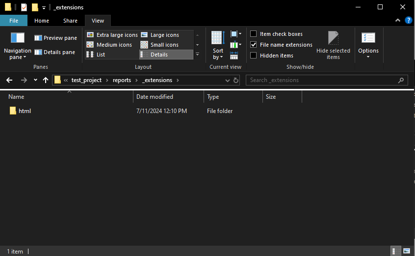
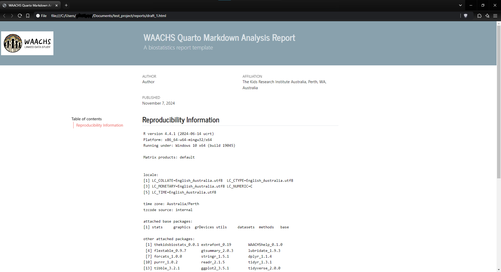

create_markdown.RmdMarkdown is an invaluable tool for organising and presenting analytical output. Ensuring consistent formatting and themes of analytical reports across different topic areas is useful for the WAACHS project.
The create_markdown function calls some pre-made
templates and renders a pre-made template the analyst can use.
The function works well in conjunction with
WAACHShelp::create_project.
We are able to initialise both a HTML or Word document.
library(WAACHShelp)The function has a small set of arguments
file_name – What should this markdown document be
called?ext_name – should a HTML ("html") or Word
("word") report be generated? Default is HTML.Let’s create a blank markdown document in HTML format called “draft_1”
Run the function, and specify what we would like our report to be called:
create_markdown(file_name = "draft_1",
ext_name = "html")This opens the following window:
Navigate to where you would like the template to be placed. I have selected the “reports” folder.
All done!
The template qmd file has been created, along with an
"_extensions" folder. The YAML header in this QMD file is
now configured to a HTML report. This houses all of our formatting and
templating.
This extensions folder can be modified as necessary. The HTML report contains a CSS file, and the Word report has a template Word document.

Opening the QMD file, we see the following YAML settings have been populated for us. All we have to do is click Render.
The rendered HTML report can then be opened in a browser:
